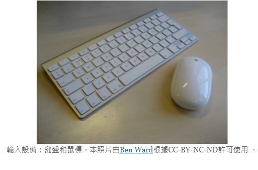
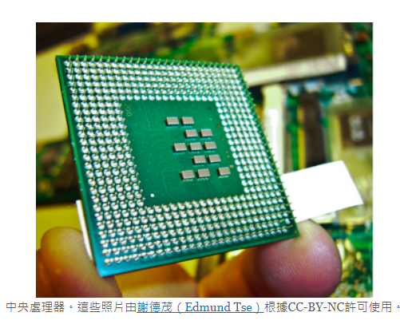

Computer hardware consists of the mechanical and electrical parts of the computer. Data flows through the motherboard in what is known as the system bus. External ports, which are discussed in more detail further in this lesson, allow peripheral devices to be connected to the system unit. Common ports are USB, serial, and parallel ports.Peripheral devices consist of hardware attached to the system unit and are designated as input, output, or both. Traditional input device examples are the mouse and keyboard which are used to input data.
計算機硬件由計算機的機械和電氣部分組成。數據以所謂的系統總線流經母板。在本課中將進一步詳細討論的外部端口允許將外圍設備連接到系統單元。通用端口是USB，串行和並行端口。外圍設備由連接到系統單元的硬件組成，並被指定為輸入，輸出或兩者。傳統的輸入設備示例是用於輸入數據的鼠標和鍵盤。

Output devices consist of common items such as monitors, speakers, and printers. All of these devices are ways that the computer can give feedback to the user through either visual or auditory output.Traditionally singular devices have evolved to become both input and output. Gaming Joysticks which provide feedback to the user through vibrations and of course the touch-screen display now serve as both.
輸出設備由通用項目組成，例如監視器，揚聲器和打印機。所有這些設備都是計算機可以通過視覺或聽覺輸出向用戶提供反饋的方式。傳統上，單個設備已演變為輸入和輸出。通過振動向用戶提供反饋的遊戲操縱桿，當然觸摸屏顯示器現在兼用作兩者。
The central processing unit (CPU) is the hardware that is the “brains” of the computer and the central point where processing occurs.The CPU is the master of the computer. Every subsystem, including the input, output, and storage systems, interacts with and through the processor. For example, the processor receives the user’s input (such as a mouse double-clicking a file on the screen), then interacts with the storage device (such as the hard drive) to retrieve the file. Processing, which is the act of taking data that has been input and converting it to something usable, occurs. Then, the processor creates a visual display of the file by outputting it to the monitor through the output subsystems.
中央處理器（CPU）是硬件，是計算機的“大腦”，是進行處理的中心點。CPU是計算機的主人。每個子系統，包括輸入，輸出和存儲系統，都與處理器交互並通過處理器交互。例如，處理器接收用戶的輸入（例如，鼠標雙擊屏幕上的文件），然後與存儲設備（例如，硬盤驅動器）進行交互以檢索文件。發生處理，這是獲取已輸入數據並將其轉換為可用數據的行為。然後，處理器通過將文件通過輸出子系統輸出到監視器來創建文件的可視顯示。

Some hardware serves as storage. The storage functions are handled in the storage subsystems. This area is focused on the act of saving data for future use and retrieval. Early computers had very limited storage, so each program had to be entered prior to running it each time you wanted to use it. In modern computers, storage space has grown exponentially; even basic computers have hundreds of gigabytes or even terabytes of information storage available. Computers use both short-term and long-term storage in their daily operations. For example, when you are typing up a report for school, it is stored in the short-term memory (RAM) of the computer while you are typing and editing the document. Once you save the document, it is transferred to the hard drive (internal) or a USB flash drive (external) for long-term storage and future access.
一些硬件充當存儲。存儲功能在存儲子系統中處理。該領域專注於保存數據以備將來使用和檢索的行為。早期計算機的存儲空間非常有限，因此每次您想使用它時，都必須在運行該程序之前輸入每個程序。在現代計算機中，存儲空間成倍增長。甚至基本計算機都具有數百GB甚至TB的可用信息存儲。計算機在日常操作中同時使用短期和長期存儲。例如，當您為學校鍵入報告時，在鍵入和編輯文檔時，報告將存儲在計算機的短期內存（RAM）中。保存文檔後，
Let’s look at the internal components of a PC. Explore the simulation below to identify and locate the key internal components of the system unit within a desktop PC. To identify components, move your mouse pointer over the name of the component or the image. Then click on each component to see a detailed view. In the detailed view, you will be able to rotate most components for a complete examination.
讓我們看一下PC的內部組件。探索以下仿真，以識別並找到台式機內系統單元的關鍵內部組件。要識別組件，請將鼠標指針移到組件或圖像的名稱上。然後單擊每個組件以查看詳細視圖。在詳細視圖中，您將能夠旋轉大多數組件以進行完整檢查。
Copyright © All rights reserved | This template is made with by Colorlib